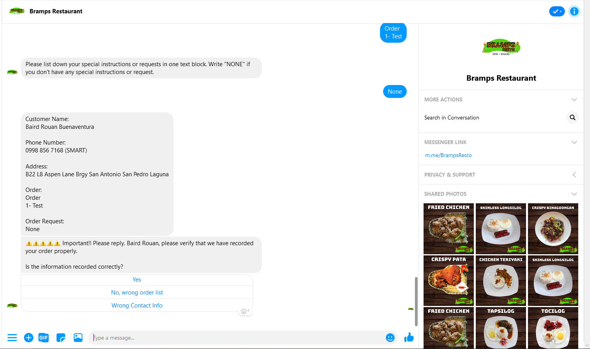

Contact
San Pedro, Laguna
Personal Information
- Age: 23
- Gender: Male
- Nationality: Filipino
- Weight: 82 kg
- Height: 170 cm
- Religion: Born-Again Christian
Programming Languages
- C#
- C++
- Hardware Description Language
Work Experience
Programmer - Freelance (Project Based 2016-Present)
- Designed and created simple desktop applications using C# and .NET for individuals, and small bussinesses.
- Designed and created simple circuit simulations for individuals using hardware description language (IVerilog).
Facebook Page Manager - BRAMPS Restaurant (September 2018 - Present)
- Provide customer support for BRAMPS Restaurant
- Manage online marketing for BRAMPS Restaurant
Technical Support and Programmer - BRAMPS Restaurant (September 2018 - Present)
- Built, manage, and maintains BRAMPS Restaurant's online order system messenger bot that takes down orders thru messenger chat and sends an SMS to the restauant.
Educational Background & Certification
Bachelor of Science in Computer Engineering
Mapua University (2014 - Present)
Specialization Track: Microsoft .Net Technology
Projects
- Messenger Bot Online Order Management System
This project is completed and now implemented in BRAMPS Restaurant.
This Project uses a bot-builder and an android device to automatically collect orders thru chat and send the orders to store as SMS
Sample Images: 

Messenger Customer Interface SMS sent to Restaurant SMS sent to customer - Restaurant Management System Programmed in SQLite, and C#
This project is a Point-of-Sale system and inventory management system all in one application.
Development of this pet project started on August 2020